AKKERBOUW Kalkarme klei
Veel kleigronden worden kalkhoudend afgezet. De vegetatie die op een bodem groeit werkt zuur en lost de kalk op. Voor gebruik in de akkerbouw zijn de kalkloze kleigronden niet de makelijkste gronden.
- Inleiding
- Voorbeelden 2.1. Oude rivierklei bij Montferland 2.2. Kalkarme zavelgrond langs de IJssel bij Brummen 2.3. Zware kalkarme komklei in de Betuwe
1. Inleiding
Kalkarme zavel- en kleigronden treffen we aan bij de Maas, de Rijn, de Oude IJssel in de Achterhoek en ook verder verspreid in Nederland. De wat lichtere gronden worden voor akkerbouw gebruikt, de wat zwaardere vooral voor weidebouw. Op de wat zwaardere wordt wel wat maïs en soms suikerbieten verbouwd. Dat de zwaardere gronden weinig akkerbouw kennen, hangt samen met de structuurproblemen. Ook de wat lichtere zijn niet altijd makkelijk te bewerken en vergen veel aandacht. Het klaarmaken van het zaaibed in het voorjaar, de onkruidbestrijding in de zomer en de oogst in de herfst zijn, vooral bij ongunstige weersomstandigheden niet altijd makkelijk.
2. Voorbeelden
- Oude rivierklei bij Montferland2. Jonge kalkarme rivierklei langs de IJssel3. Zware kalkarme komklei in de Betuwe
2.1. Oude rivierklei bij Montferland
Het typische voor de gronden bij Montferland is dat het brikgronden zijn. Bij brikgronden is klei uit de bovengrond naar een wat diepere laag vlak onder de bouwvoor gespoeld. Deze laag verdicht gemakkelijk. Een van de problemen die daar uit voorkomt, is wateroverlast.
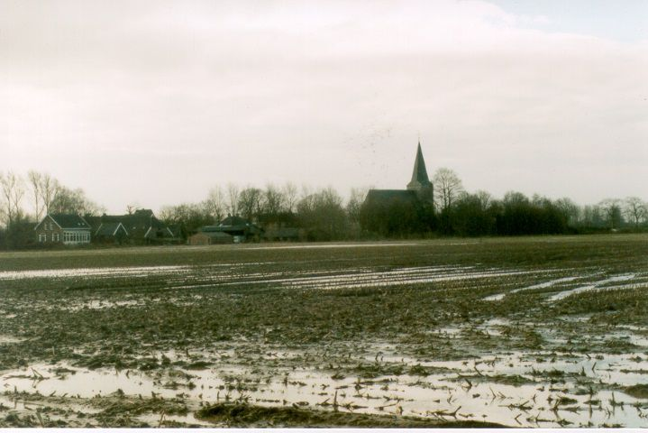
Wateroverlast bij Drempt in de Achterhoek.
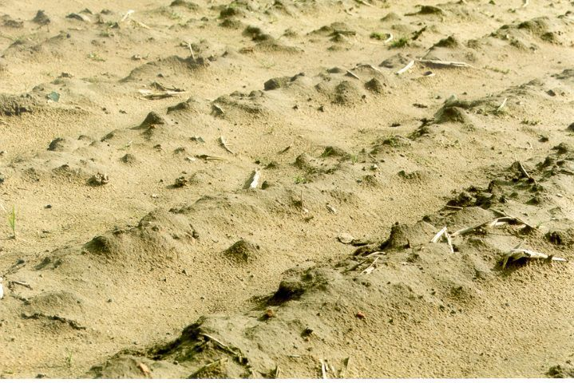
Doordat de kleideeltjes deels zijn weggespoeld, is de bovengrond lichter geworden en ook instabiel. De gevoeligheid voor verslemping wordt hierdoor versterkt.
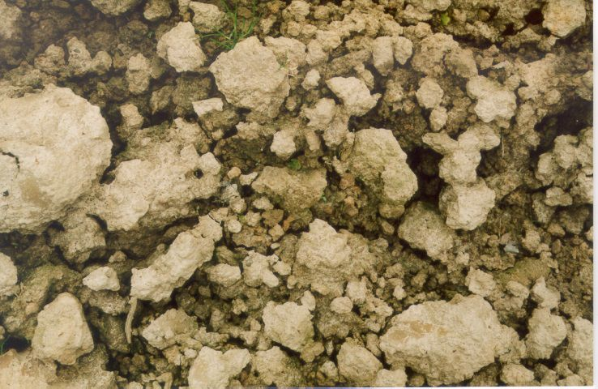
De vorming van een goed zaaibed in het voorjaar is bij ongunstige omstandigheden een probleem.
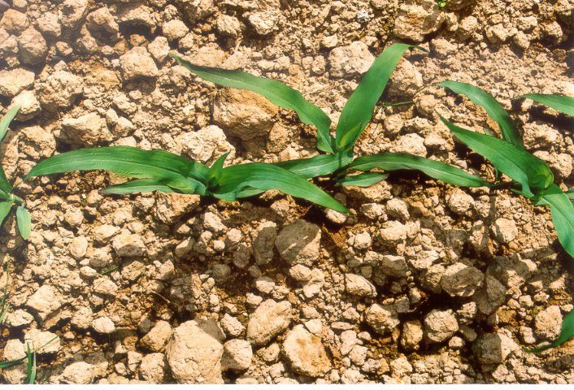
De lastige voorjaarsgrondbewerking geeft een slecht zaaibed. Teelt van maïs die wat later gezaaid wordt en een minder fijn zaaibed vereist, is dan een mogelijkheid.
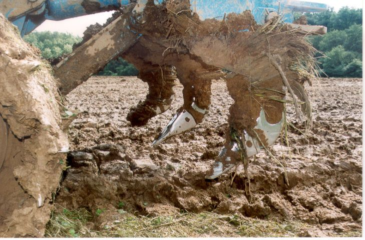
Een van de oplossingen om de verdichte laag onder de bouwvoor los te krijgen is woelen.
2.2. Kalkarme zavelgrond langs de IJssel bij Brummen
De zavelgronden langs de IJssel zijn nog niet zo oud. De IJssel stroomt hier pas sinds ca 1100. In 1400 werd de bedijking afgesloten en in de tijd tussen 1100 en 1400 zijn kalkrijke materialen afgezet. Op wat nattere plekken zijn ze al ontkalkt en op een perceel bij Brummen wordt akkerbouw bedreven met granen, aardappel en gras/klaver.
Het perceel is een lichte zavelgrond met een pH-KCL van 4,9 en een organische stofgehalte van 1,9%.
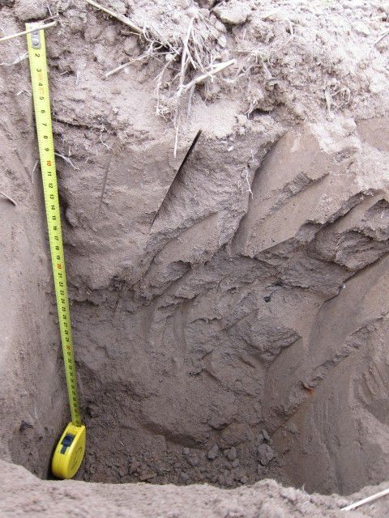
Na gerst zien we het volgende:
Bodemstructuur
De laag 0-5 cm is los en bewerkt.
De laag 5-24 cm is de bouwvoor en is iets donkerder dan de laag eronder. De laag bestaat uit uitsluitend scherpblokkige elementen. De beworteling vindt plaats tussen de scherpblokkige elementen en in wormgangen. De laag is vanwege wormgangen van verschillende grootte wel doorwortelbaar.
De laag 24-34 cm is sterk verdicht met enkele verticale wormgangen.
De laag 34-43 is bruin gekleurd en poreus.
Dieper dan 43 cm bevindt zich organischestofarm dekzand.
Beworteling
Wortels zien we vrijwel alleen in de laag 0-20 cm. Daaronder enkele in wormgangen
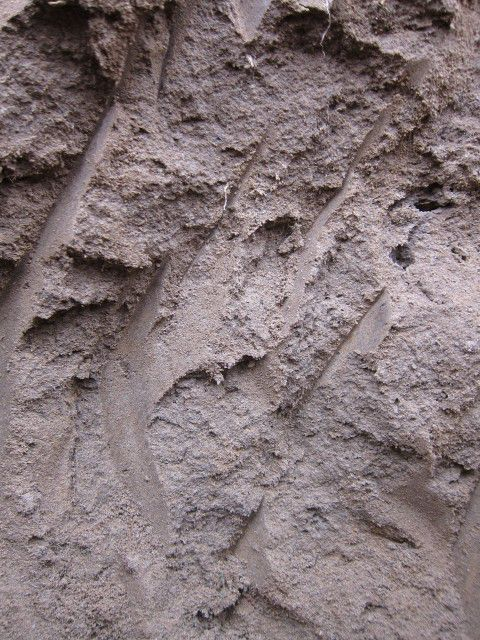
De laag 5-40 cm is sterk verdicht.
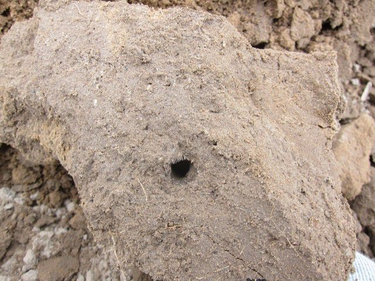
Laag 20-30 cm, volledig verdicht met uitzonderingen van de wormgangen.
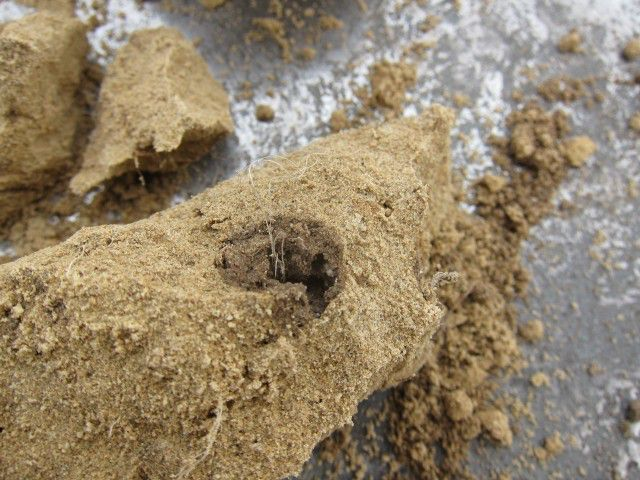
Wormgang met enkele wortels van de gerst in de zandlaag onder de zavel op ca 45 cm diepte. Zavelbekleding van de wand van de gang. Waarschijnlijk is dit een gang van Lumbricus terrestris.
2.3. Zware kalkarme komklei in de Betuwe
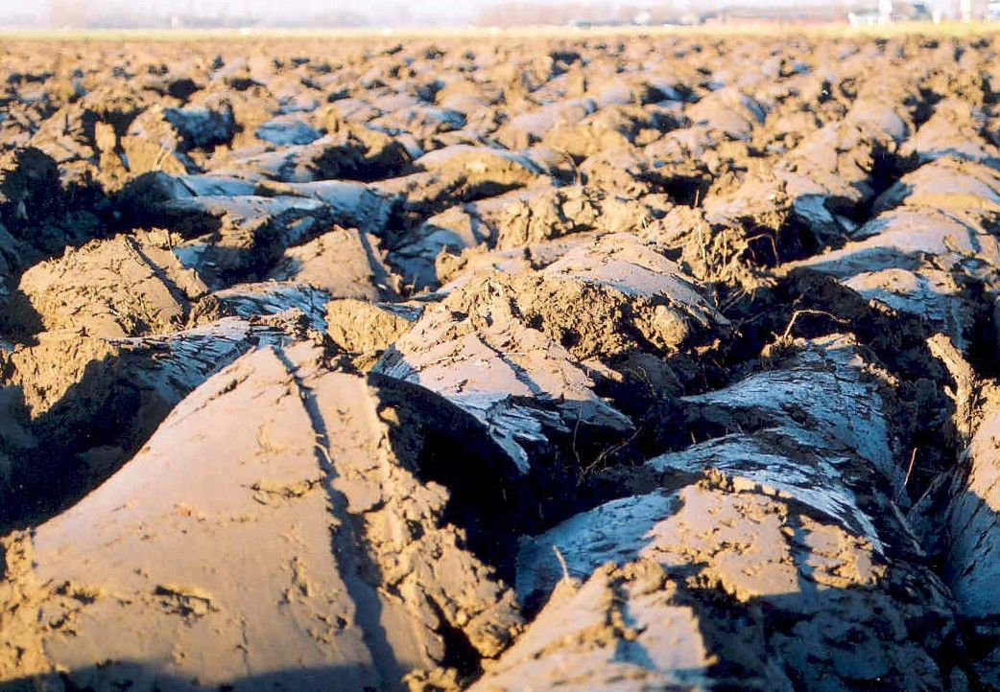
Na het ploegen in de late herfst.
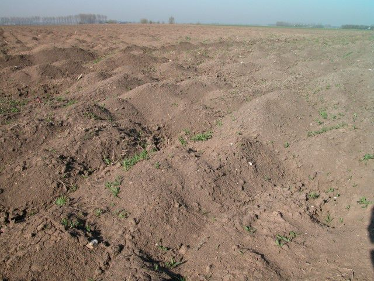
Op dezelfde plek in het voorjaar. In de winter heeft het flink gevroren en zijn er ijslensjes ontstaan. Na de dooi bleven er kleine hoekige kruimels over. Die drogen snel uit en het wordt dan mogelijk een goed zaaibed te maken. Door de vorst in de winter wordt deze lastige, zeer zware grond bewerkbaar.
Vorst op klei in de winter heeft vanwege bovenstaand proces een goede naam. Wanneer door een goed zaaibed de groei ook voorspoedig is, is dit ook wel terecht. Toch kan vorst ook negatief werken. De werking van de ijslensjes is een puur fysieke en geen biologische structuurverbetering. De kleine korrels hebben geen samenhang. Wanneer op een strenge winter een nat voorjaar volgt gaan de losse deeltjes verspoelen. Alleen een biologisch gevormde structuur kan hier weerstand tegen bieden. Bij een nat voorjaar is het vaak gunstig wanneer het in de winter niet gevroren heeft.